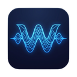

WAIL
Wide Area Intervalic Link
What's your name?
Get Started
WAIL
Wide Area Intervalic Link
⚙
Join Room
Public Rooms
Room
Generate
Password
Beats per interval
Beats per bar
Advanced
Record session locally
Recording directory
Browse
Record per-peer stems (vs single mix)
Keep recordings for (days, 0 = forever)
Join Room
Loading...
Refresh
WAIL
0/0
⚙
Session
Chat
Debug
0
Status
BPM
—
Interval (BPI)
-
Link Peers
0
Recording
REC
0 MB
Tracks to send
No local Link Audio channels discovered
Peers
No peers connected
Send
About
WAIL
Capture debug
Dump capture to WAV
Loopback my audio via server
Audio stats
all time
Intervals sent / received
0 / 0
Audio bytes sent / received
0 B / 0 B
Peers detail
No peers connected
Grid alignment
Align my grid to the room
Alignment
—
Grid error (δ)
—
Relay round-trip
—
Playback
Publish WAIL Metronome channel
Broadcast metronome to room
Emit cushion
100 ms
Interval offset D
1
Local audio health
No diagnostics yet
Stream offsets vs room grid (debug)
Logs
Disconnect
Settings
×
Display Name
Link Audio Name
Save debug log locally
Remember settings
Developer mode (show the Debug tab)
Done